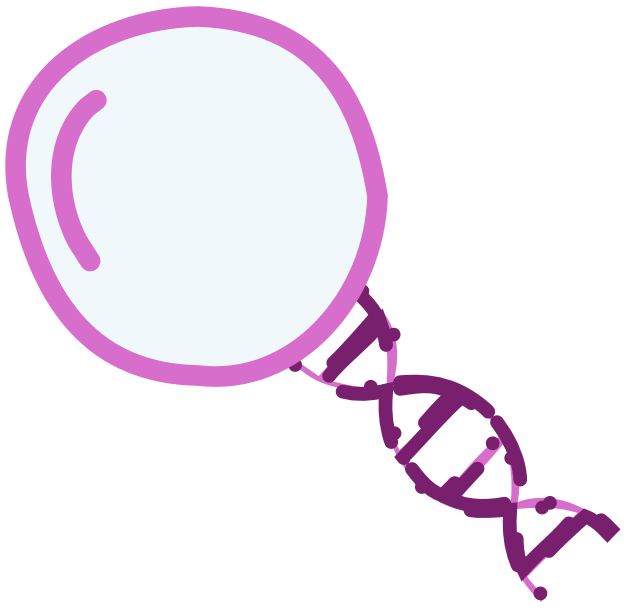

Filters
| Method | Readouts | Resolution | Citations | Year | |||
|---|---|---|---|---|---|---|---|
| Loading methods… | |||||||
Using an LLM? Point it at the Markdown masterlist (the whole database in one file) or methods.json. Also: llms.txt. Citation counts from Crossref, refreshed weekly.

A curated, continuously updated catalogue of sequencing assays and analysis tools
| Method | Readouts | Resolution | Citations | Year | |||
|---|---|---|---|---|---|---|---|
| Loading methods… | |||||||